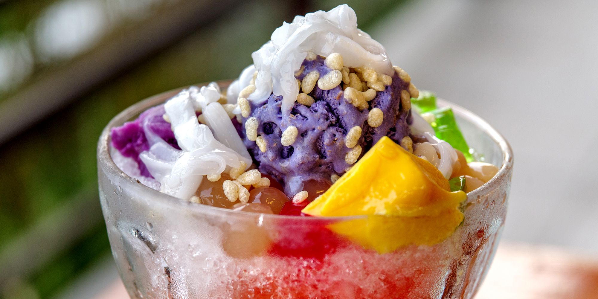

|  |
DescriptionHalo-halo, also spelled haluhalo, is a popular Filipino cold dessert which is a concoction of crushed ice, evaporated milk and various ingredients including, among others, ube, sweetened beans, coconut strips, sago, gulaman, pinipig rice, boiled root crops in cubes, fruit slices, flan, and topped with a scoop of ice cream. Ingredientssweet red bean (munggo) Procedure1. In a serving glass, layer sweet red bean, sweet white beans, coconut gel, macapuno, and jackfruit. Top with shaved ice. Drizzle about one tablespoon of evaporated milk over shaved ice. Top with a scoop of ube ice cream. Enjoy immediately! PriceP25 / serving |
||
| Previous | Next |